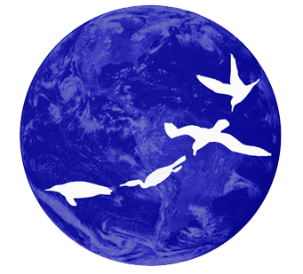
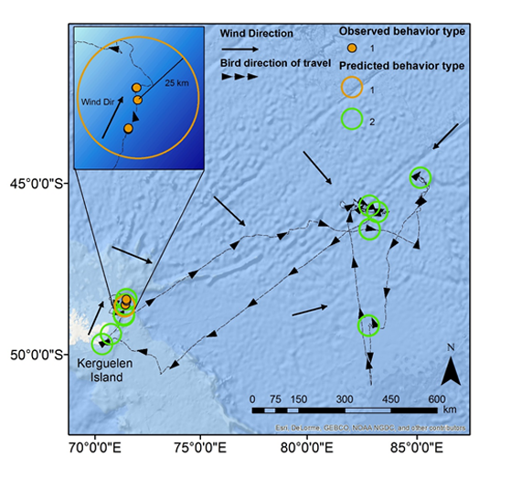
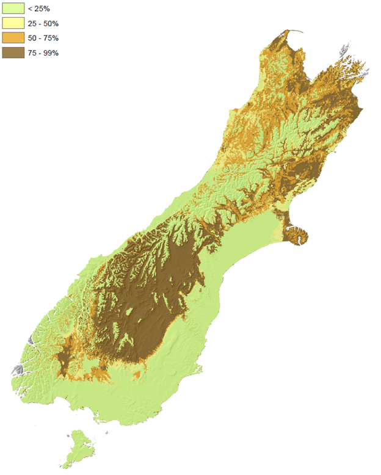
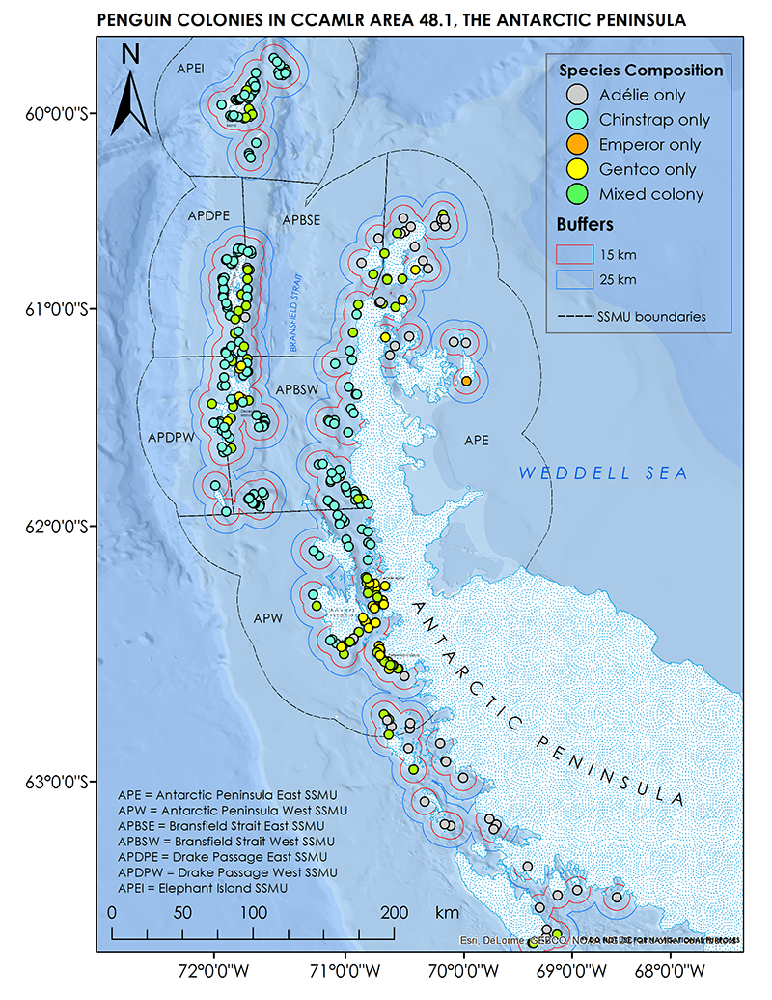
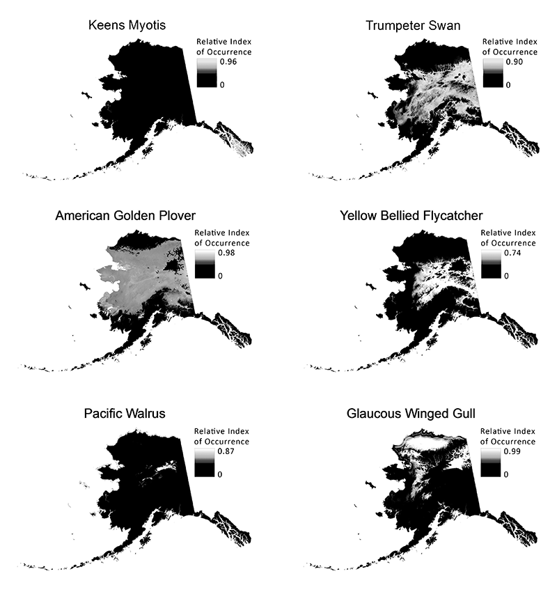

Our services
| Data analysis | |
|
We specialize in decision tree machine learning algorithms (Check out This explanation ), with strong emphasis on predictive analytics and determination of mechanistic understanding of systems based on model experimentation. Black Bawks also uses deep learning methods with the latest tools derived in Python and the R programming languages (A great overview of the top languages can be found here ). Currently we are working with image classification schemes as well using Google's TensorFlow algorithms. |
|
| Website/application design | |
|
We work with some of the latest web frameworks to create highly interactive applications. Check out some of the cool applications we are involved with creating! We also build static pages to help your local business get recognized. |
|
| |
 |
| Mapping services | |||
|
Our team are experienced Geographic Information Systems (GIS) specialists, working primarily within the ArcGIS framework. Whether it be for publications, websites, posters or presentations, we offer competitive rates on mapping services catered to your needs. |
|||
|  |  |  |  |
| Environmental Consultation | |
|
The Blackbawks team has a variety of experience in field survey and study design. We can help your development go from data collection to analysis in preparation for important Environmental impact assessments. Our expertise lies primarily with marine and terrestrial birds and mammals, as well as forest and landscape ecology. Some work we have been involved with on Economic viability of weed control can be FOUND HERE . |
|